Benchmarks using CMFD¶
Explain purpose of doing benchmarks
Note
Specifications and descriptions of the benchmarks were taken directly out of the following two locations:
- MULLER, E.Z. and Weiss Z.J., “Benchmarking with the Multigroup Diffusion High-Order Response Matrix Method,” Annals of Nuclear Energy, Vol. 18, No. 9, pp. 534-544, 1991.
- SMITH, K.S. “TITLE OF MASTERS”
BIBLIS¶
The 2-D BIBLIS problem is a realistic and highly nonseparable 2-group problem representative of an actual operating pressurized water reactor (PWR), with a checker-board-loaded core. Homogenized fuel assemblies with widths of 23.1226 cm and seven diffrence compositions are present in the core which is surrouded by a 23.1226 cm homogenized reflector (i.e. the baffle is homogenized with the water reflector) with vacuum external boundary conditions.
Important
The following changes were made from the original benchmark, but should not affect the answers significantly
- reflecting material place outside of the core so that the computational domain is a rectangle. Reflector boundary not treated explicitly as in orginal specficiations. See references for true core layout.
- since the reflecting region is large, zero-incoming partial current boundary conditions were used instead of vacuum
Diffusion Parameters:
Zone Group 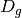 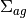 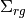 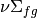 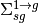 1 1 1.4360 0.0095042 0.0272582 0.0058708 0.0 2 0.3635 0.0750580 0.0750580 0.0960670 0.017754 2 1 1.4366 0.0096785 0.0272995 0.0061908 0.0 2 0.3636 0.0784360 0.0784360 0.1035800 0.017621 3 1 1.3200 0.0026562 0.0257622 0.0 0.0 2 0.2772 0.0715960 0.0715960 0.0 0.023106 4 1 1.4389 0.0103630 0.0274640 0.0074527 0.0 2 0.3638 0.0914080 0.0914080 0.1323600 0.017101 5 1 1.4381 0.0100030 0.0272930 0.0061908 0.0 2 0.3665 0.0848280 0.0848280 0.1035800 0.017290 6 1 1.4385 0.0101320 0.0273240 0.0064285 0.0 2 0.3665 0.0873140 0.0873140 0.1091100 0.017192 7 1 1.4389 0.0101650 0.0272900 0.0061908 0.0 2 0.3679 0.0880240 0.0880240 0.1035800 0.017125 8 1 1.4393 0.0102940 0.0273210 0.0064285 0.0 2 0.3680 0.0905100 0.0905100 0.1091100 0.017027 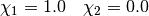
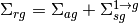
Core map:
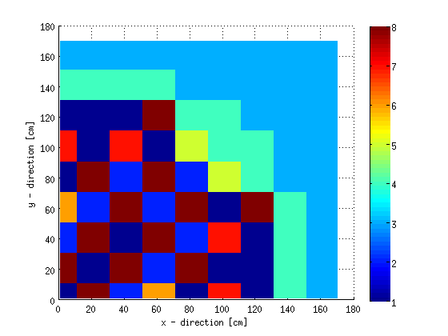Benchmark Results:
Case k-eff (pcm) Reference 1.025100 N/A CMFD (1 cm mesh) 1.025114 1.4 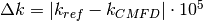
Group 1 Relative Flux:
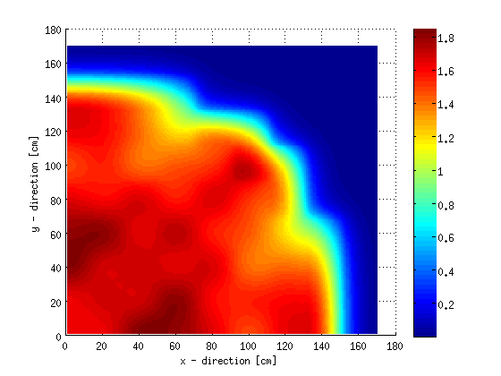Group 2 Relative Flux:
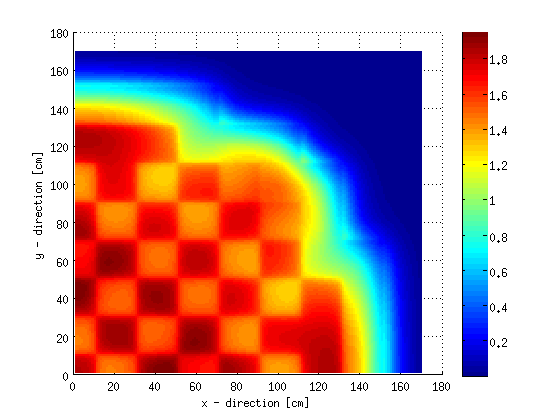